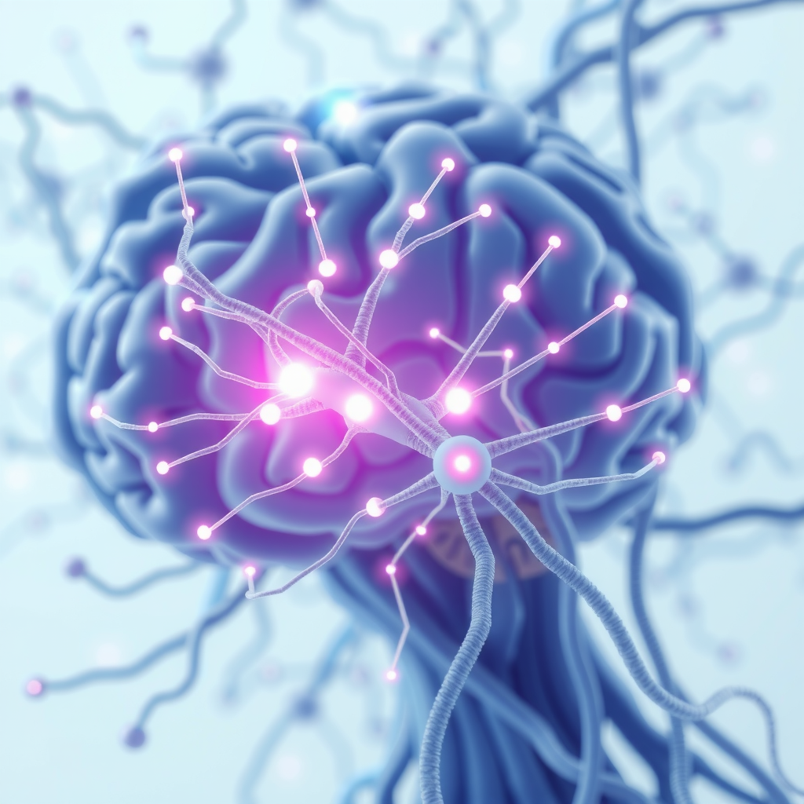
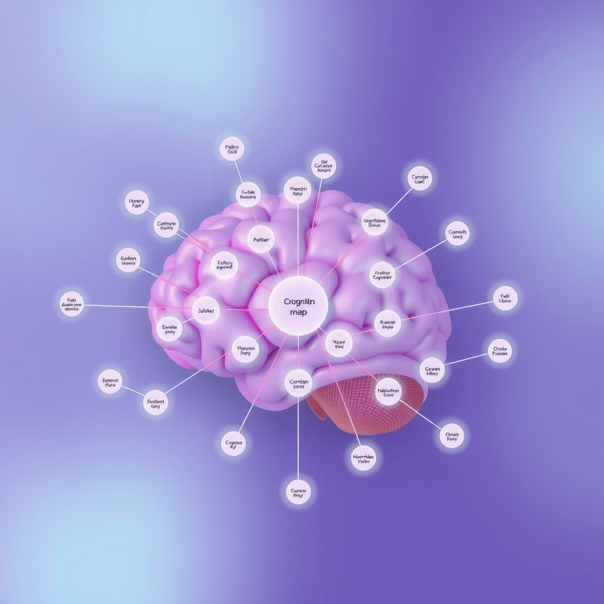
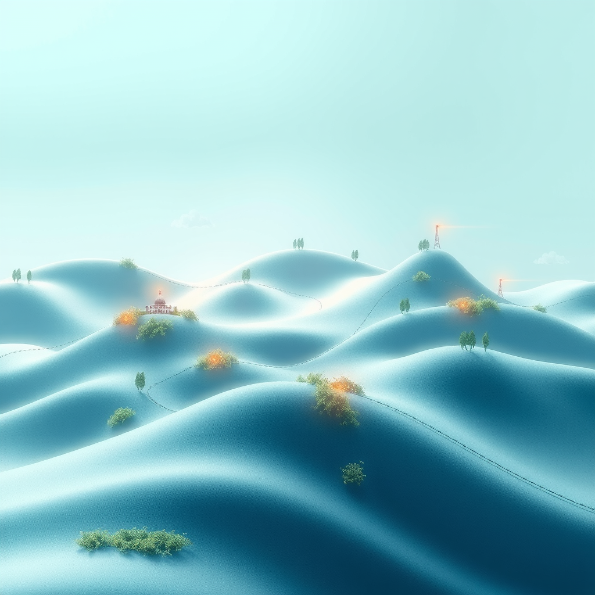

The human brain is, at its core, a mapping device. Long before we developed written language or digital databases, our ancestors survived by creating intricate mental maps of their environment—where to find water, which plants were edible, how to navigate back to shelter. Today, this same neural machinery that once charted physical landscapes now helps us navigate the vast territories of abstract knowledge.
Recent advances in neuroscience have revealed that our brains don't simply store information as isolated facts. Instead, they construct elaborate spatial frameworks—cognitive maps that organize concepts, ideas, and memories in relation to one another. Understanding this fundamental aspect of human cognition has profound implications for how we design information systems, structure educational content, and build tools for knowledge work.
The Hippocampus: Your Brain's Master Cartographer
At the heart of our spatial memory system lies the hippocampus, a seahorse-shaped structure deep within the brain's temporal lobe. For decades, neuroscientists have known that the hippocampus plays a crucial role in forming new memories and spatial navigation. But groundbreaking research over the past two decades has revealed something far more intriguing: the hippocampus doesn't just map physical space—it maps conceptual space as well.
In 2005, researchers Edvard and May-Britt Moser discovered "grid cells" in the entorhinal cortex, which works closely with the hippocampus. These cells fire in a hexagonal pattern as an animal moves through space, creating a coordinate system for navigation. This discovery, which earned them the Nobel Prize in 2014, fundamentally changed our understanding of how the brain represents location.
But here's where it gets fascinating: subsequent research has shown that these same grid cells activate when we navigate through abstract conceptual spaces. When you're learning a new subject, your brain literally creates a map of that knowledge domain, with concepts positioned relative to one another just as landmarks are positioned in physical space.
Research Insight:A 2016 study published in Nature found that the hippocampus uses the same neural code for both spatial and non-spatial information. When participants learned about different bird species and their characteristics, their hippocampal activity showed the same hexagonal grid patterns observed during physical navigation.
Place Cells and the Architecture of Memory
Working alongside grid cells are "place cells"—neurons that fire when an animal is in a specific location. Discovered by John O'Keefe in 1971 (who shared the 2014 Nobel Prize with the Mosers), place cells act like neural GPS coordinates, marking specific positions in an environment.
What makes place cells particularly relevant to information architecture is their flexibility. These cells don't just respond to physical locations—they respond to contexts, situations, and even abstract positions within a conceptual framework. When you're organizing information in your mind, place cells help anchor specific pieces of knowledge to particular "locations" within your mental map.
This has profound implications for how we design information systems. When we create digital knowledge repositories, we're not just storing data—we're providing scaffolding for users to build their own cognitive maps. The more our information architecture aligns with the brain's natural mapping tendencies, the easier it becomes for users to learn, remember, and retrieve information.
The Role of Boundaries and Landmarks
Just as physical navigation relies on landmarks and boundaries, cognitive navigation depends on conceptual landmarks—key ideas that serve as reference points within a knowledge domain. Research has shown that the brain uses "boundary cells" that fire when an animal approaches the edge of an environment. These same cells activate when we encounter the boundaries of conceptual categories.
This explains why clear categorization and well-defined boundaries between topics are so important in information design. When categories blur or overlap confusingly, it's not just aesthetically displeasing—it's cognitively taxing. Our brains struggle to build stable mental maps when the boundaries keep shifting.
Spatial Memory and Information Retrieval
One of the most practical applications of spatial memory research lies in understanding how we retrieve information. The "method of loci," an ancient mnemonic technique, works by associating information with specific locations in an imagined physical space. Memory champions use this technique to memorize thousands of digits or entire decks of cards by mentally placing each item in a familiar location, like rooms in their house.
But you don't need to be a memory athlete to benefit from spatial organization. Every time you remember where you saved a file by visualizing its location in your folder structure, or recall a fact by remembering where it appeared on a page, you're leveraging your spatial memory system.
Studies show that people are 40% more likely to remember information when it's presented with consistent spatial positioning. This is why good interface design maintains stable layouts—it allows users to build reliable mental maps of where information lives.
Implications for Digital Knowledge Systems
Understanding the neuroscience of spatial memory has direct implications for how we design digital tools for knowledge work. Traditional file systems, with their hierarchical folder structures, align reasonably well with our spatial intuitions. We can visualize "going into" a folder, "moving up" to a parent directory, or "navigating across" to a sibling folder.
However, knowledge rarely fits neatly into hierarchical structures. Ideas connect in multiple directions, forming networks rather than trees. This is where modern knowledge management tools like Raindrop.io excel—they allow for both hierarchical organization and flexible tagging, enabling users to create multiple overlapping maps of the same information space.
The Power of Visual Spatial Cues
Research consistently shows that visual spatial cues dramatically improve information recall and navigation. Color coding, spatial positioning, and visual landmarks all help users build more robust mental maps. When you assign a specific color to a category in your bookmark manager, you're not just making it pretty—you're creating a visual landmark that your hippocampus can latch onto.
This is why the best information systems provide multiple ways to visualize and navigate the same content. Some users prefer list views, others prefer grid layouts, and still others benefit from graph or network visualizations. Each view provides different spatial cues that can help different users build their optimal mental maps.
Cognitive Load and Navigation Efficiency
One of the most important findings from spatial memory research is that cognitive load increases dramatically when we can't build stable mental maps. Every time a user has to reorient themselves, figure out where they are, or search for information they know exists but can't locate, they're expending cognitive resources that could be better spent on actual thinking and learning.
This is why consistency in information architecture is so crucial. When navigation patterns change unpredictably, when categories reorganize without warning, or when search results appear in different orders each time, users can't build reliable mental maps. The cognitive cost of this instability is significant and cumulative.
Modern digital cartography tools recognize this principle. By maintaining consistent spatial relationships, providing clear visual hierarchies, and offering multiple navigation pathways, they reduce cognitive load and allow users to focus on the content itself rather than the mechanics of finding it.
The Importance of Spatial Consistency
Neuroscience research has demonstrated that the brain forms expectations about spatial relationships remarkably quickly. After just a few exposures to a layout, your hippocampus begins predicting where things should be. When those predictions are violated—when a button moves, a menu reorganizes, or content shifts unexpectedly—it triggers a prediction error that demands attention and cognitive resources.
This is why responsive design, while necessary for multi-device compatibility, must be implemented thoughtfully. The goal isn't just to make content fit different screen sizes—it's to maintain spatial relationships and navigation patterns that allow users to transfer their mental maps across devices.
Learning and the Construction of Knowledge Maps
Perhaps the most profound implication of spatial memory research lies in how we approach learning and education. When we learn a new subject, we're not just accumulating facts—we're building a cognitive map of that knowledge domain. The quality and structure of that map determines how well we can navigate the subject, make connections, and apply our knowledge in new contexts.
Effective educators have always understood this intuitively. They provide overviews that establish the "terrain" of a subject, use analogies that connect new concepts to familiar spatial frameworks, and regularly help students see how individual facts fit into the larger landscape. Now neuroscience is confirming what good teachers have always known: learning is fundamentally about building navigable mental maps.
Educational Application:Studies show that students who create visual concept maps while learning retain 30% more information than those who use traditional note-taking methods. The act of spatially organizing information helps the hippocampus encode it more effectively.
The Future of Knowledge Architecture
As our understanding of spatial memory deepens, we're beginning to see new approaches to information architecture that more closely align with how our brains naturally work. Graph databases, semantic networks, and spatial computing interfaces all represent attempts to create digital environments that feel more like navigable spaces than abstract data structures.
Virtual and augmented reality technologies offer particularly exciting possibilities. By placing information in actual three-dimensional space, these technologies could leverage our spatial memory systems even more directly. Imagine learning anatomy by walking through a virtual body, or understanding a complex system by exploring a spatial representation where you can literally see how components relate to one another.
But we don't need to wait for VR to apply these principles. Even in traditional two-dimensional interfaces, we can design with spatial memory in mind. Consistent layouts, clear visual hierarchies, meaningful spatial groupings, and stable navigation patterns all help users build the mental maps they need to work effectively with information.
Practical Applications for Knowledge Workers
For individuals managing their own knowledge systems, understanding spatial memory offers practical guidance. When organizing bookmarks, notes, or files, consider how you can leverage spatial cues. Use consistent color coding, maintain stable folder structures, and create visual landmarks that help you navigate your information space.
Tools like Raindrop.io excel at this because they provide multiple spatial frameworks simultaneously. You can organize bookmarks hierarchically in collections, tag them for cross-cutting themes, and visualize them in different layouts. This flexibility allows you to build multiple overlapping mental maps of the same information, each optimized for different retrieval contexts.
The key is consistency and intentionality. Your organizational system should feel like a familiar landscape that you can navigate confidently, not a constantly shifting maze that requires conscious effort to traverse.
Conclusion: Mapping the Unmappable
The neuroscience of spatial memory reveals a profound truth: our brains are fundamentally spatial processors, even when dealing with abstract information. We don't just store knowledge—we map it, creating navigable cognitive landscapes that allow us to explore, connect, and retrieve information efficiently.
As we design information systems, educational experiences, and knowledge management tools, we must recognize and respect this fundamental aspect of human cognition. The best systems aren't those that impose arbitrary organizational schemes, but those that provide scaffolding for users to build their own effective mental maps.
In an age of information overload, the ability to create clear, navigable knowledge structures isn't just a nice-to-have—it's essential. By understanding how our brains naturally map information, we can design better tools, learn more effectively, and navigate the vast landscape of human knowledge with greater confidence and capability.
The cartography of cognition is still being charted, with new discoveries emerging regularly. But the fundamental principle is clear: we are spatial creatures, and our knowledge systems work best when they honor that reality. Whether you're designing a website, organizing your digital life, or teaching a complex subject, remember that you're not just arranging information—you're helping brains build maps. Make those maps clear, consistent, and navigable, and you'll unlock the full power of human spatial memory.